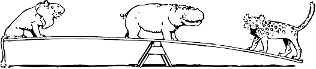
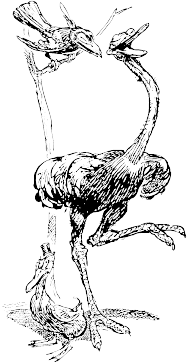
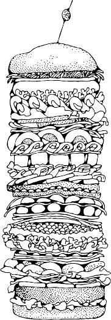
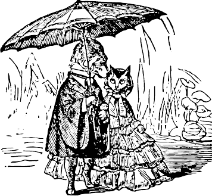

You are here: Home Dive Into HTML5
Recently, I stumbled across a quote from a Mozilla developer about the tension inherent in creating standards:
Implementations and specifications have to do a delicate dance together. You don’t want implementations to happen before the specification is finished, because people start depending on the details of implementations and that constrains the specification. However, you also don’t want the specification to be finished before there are implementations and author experience with those implementations, because you need the feedback. There is unavoidable tension here, but we just have to muddle on through.
Keep this quote in the back of your mind, and let me explain how HTML5 came to be.

This book is about HTML5, not previous versions of HTML, and not any version of XHTML. But to understand the history of HTML5 and the motivations behind it, you need to understand a few technical details first. Specifically, MIME types.
Every time your web browser requests a page, the web server sends “headers” before it sends the actual page markup. These headers are normally invisible, although there are web development tools that will make them visible if you’re interested. But the headers are important, because they tell your browser how to interpret the page markup that follows. The most important header is called Content-Type, and it looks like this:
Content-Type: text/html
“text/html” is called the “content type” or “MIME type” of the page. This header is the only thing that determines what a particular resource truly is, and therefore how it should be rendered. Images have their own MIME types (image/jpeg for JPEG images, image/png for PNG images, and so on). JavaScript files have their own MIME type. CSS stylesheets have their own MIME type. Everything has its own MIME type. The web runs on MIME types.
Of course, reality is more complicated than that. The first generation of web servers (and I’m talking web servers from 1993) didn’t send the Content-Type header because it didn’t exist yet. (It wasn’t invented until 1994.) For compatibility reasons that date all the way back to 1993, some popular web browsers will ignore the Content-Type header under certain circumstances. (This is called “content sniffing.”) But as a general rule of thumb, everything you’ve ever looked at on the web — HTML pages, images, scripts, videos, PDFs, anything with a URL — has been served to you with a specific MIME type in the Content-Type header.
Tuck that under your hat. We’ll come back to it.
Why do we have an <img> element? That’s not a question you hear every day. Obviously someone must have created it. These things don’t just appear out of nowhere. Every element, every attribute, every feature of HTML that you’ve ever used — someone created them, decided how they should work, and wrote it all down. These people are not gods, nor are they flawless. They’re just people. Smart people, to be sure. But just people.
One of the great things about standards that are developed “out in the open” is that you can go back in time and answer these kinds of questions. Discussions occur on mailing lists, which are usually archived and publicly searchable. So I decided to do a bit of “email archaeology” to try to answer the question, “Why do we have an <img> element?” I had to go back to before there was an organization called the World Wide Web Consortium (W3C). I went back to the earliest days of the web, when you could count the number of web servers with both hands and maybe a couple of toes.
(There are a number of typographical errors in the following quotes. I have decided to leave them intact for historical accuracy.)
On February 25, 1993, Marc Andreessen wrote:
I’d like to propose a new, optional HTML tag:
IMG
Required argument is
SRC="url".This names a bitmap or pixmap file for the browser to attempt to pull over the network and interpret as an image, to be embedded in the text at the point of the tag’s occurrence.
An example is:
<IMG SRC="file://foobar.com/foo/bar/blargh.xbm">(There is no closing tag; this is just a standalone tag.)
This tag can be embedded in an anchor like anything else; when that happens, it becomes an icon that’s sensitive to activation just like a regular text anchor.
Browsers should be afforded flexibility as to which image formats they support. Xbm and Xpm are good ones to support, for example. If a browser cannot interpret a given format, it can do whatever it wants instead (X Mosaic will pop up a default bitmap as a placeholder).
This is required functionality for X Mosaic; we have this working, and we’ll at least be using it internally. I’m certainly open to suggestions as to how this should be handled within HTML; if you have a better idea than what I’m presenting now, please let me know. I know this is hazy wrt image format, but I don’t see an alternative than to just say “let the browser do what it can” and wait for the perfect solution to come along (MIME, someday, maybe).
Xbm and Xpm were popular graphics formats on Unix systems.
“Mosaic” was one of the earliest web browsers. (“X Mosaic” was the version that ran on Unix systems.) When he wrote this message in early 1993, Marc Andreessen had not yet founded the company that made him famous, Mosaic Communications Corporation, nor had he started work on that company’s flagship product, “Mosaic Netscape.” (You may know them better by their later names, “Netscape Corporation” and “Netscape Navigator.”)
“MIME, someday, maybe” is a reference to content negotiation, a feature of HTTP where a client (like a web browser) tells the server (like a web server) what types of resources it supports (like image/jpeg) so the server can return something in the client’s preferred format. The Original HTTP as defined in 1991 (the only version that was implemented in February 1993) did not have a way for clients to tell servers what kinds of images they supported, thus the design dilemma that Marc faced.
A few hours later, Tony Johnson replied:
I have something very similar in Midas 2.0 (in use here at SLAC, and due for public release any week now), except that all the names are different, and it has an extra argument
NAME="name". It has almost exactly the same functionality as your proposedIMGtag. e.g.
<ICON name="NoEntry" href="http://note/foo/bar/NoEntry.xbm">The idea of the name parameter was to allow the browser to have a set of “built in” images. If the name matches a “built in” image it would use that instead of having to go out and fetch the image. The name could also act as a hint for “line mode” browsers as to what kind of a symbol to put in place of the image.
I don’t much care about the parameter or tag names, but it would be sensible if we used the same things. I don’t much care for abbreviations, ie why not
IMAGE=andSOURCE=. I somewhat preferICONsince it imlies that theIMAGEshould be smallish, but maybeICONis an overloaded word?
Midas was another early web browser, a contemporary of X Mosaic. It was cross-platform; it ran on both Unix and VMS. “SLAC” refers to the Stanford Linear Accelerator Center, now the SLAC National Accelerator Laboratory, that hosted the first web server in the United States (in fact the first web server outside Europe). When Tony wrote this message, SLAC was an old-timer on the WWW, having hosted five pages on its web server for a whopping 441 days.
Tony continued:
While we are on the subject of new tags, I have another, somewhat similar tag, which I would like to support in Midas 2.0. In principle it is:
<INCLUDE HREF="...">The intention here would be that the second document is to be included into the first document at the place where the tag occured. In principle the referenced document could be anything, but the main purpose was to allow images (in this case arbitrary sized) to be embedded into documents. Again the intention would be that when HTTP2 comes along the format of the included document would be up for separate negotiation.
“HTTP2” is a reference to Basic HTTP as defined in 1992. At this point, in early 1993, it was still largely unimplemented. The draft known as “HTTP2” evolved and was eventually standardized as “HTTP 1.0” (albeit not for another three years). HTTP 1.0 did include request headers for content negotiation, a.k.a. “MIME, someday, maybe.”
Tony continued:
An alternative I was considering was:
<A HREF="..." INCLUDE>See photo</A>I don’t much like adding more functionality to the
<A>tag, but the idea here is to maintain compatibility with browsers that can not honour theINCLUDEparameter. The intention is that browsers which do understandINCLUDE, replace the anchor text (in this case “See photo”) with the included document (picture), while older or dumber browsers ignore theINCLUDEtag completely.
This proposal was never implemented, although the idea of providing text if an image is missing is an important accessibility technique that was missing from Marc’s initial <IMG> proposal. Years later, this feature was bolted on as the <img alt> attribute, which Netscape promptly broke by erroneously treating it as a tooltip.
A few hours after Tony posted his message, Tim Berners-Lee responded:
I had imagined that figues would be reprented as
<a name="fig1" href="fghjkdfghj" REL="EMBED, PRESENT">Figure </a>where the relation ship values mean
EMBED Embed this here when presenting it PRESENT Present this whenever the source document is presentedNote that you can have various combinations of these, and if the browser doesn’t support either one, it doesn’t break.
[I] see that using this as a method for selectable icons means nesting anchors. Hmmm. But I hadn’t wanted a special tag.
This proposal was never implemented, but the rel attribute is still around.
It would be nice if there was a way to specify the content type, e.g.
<IMG HREF="http://nsa.gov/pub/sounds/gorby.au" CONTENT-TYPE=audio/basic>But I am completely willing to live with the requirement that I specify the content type by file extension.
This proposal was never implemented, but Netscape did later add support for embedding of media objects with the <embed> element.
While images are at the top of my list of desired medium types in a WWW browser, I don’t think we should add idiosyncratic hooks for media one at a time. Whatever happened to the enthusiasm for using the MIME typing mechanism?
This isn’t a substitute for the upcoming use of MIME as a standard document mechanism; this provides a necessary and simple implementation of functionality that’s needed independently from MIME.
Let’s temporarily forget about MIME, if it clouds the issue. My objection was to the discussion of “how are we going to support embedded images” rather than “how are we going to support embedded objections in various media”.
Otherwise, next week someone is going to suggest ‘lets put in a new tag
<AUD SRC="file://foobar.com/foo/bar/blargh.snd">‘ for audio.There shouldn’t be much cost in going with something that generalizes.
With the benefit of hindsight, it appears that Jay’s concerns were well founded. It took a little more than a week, but HTML5 did finally add new <video> and <audio> elements.
Responding to Jay’s original message, Dave Raggett said:
True indeed! I want to consider a whole range of possible image/line art types, along with the possibility of format negotiation. Tim’s note on supporting clickable areas within images is also important.
Later in 1993, Dave Raggett proposed HTML+ as an evolution of the HTML standard. The proposal was never implemented, and it was superseded by HTML 2.0. HTML 2.0 was a “retro-spec,” which means it formalized features already in common use. “This specification brings together, clarifies, and formalizes a set of features that roughly corresponds to the capabilities of HTML in common use prior to June 1994.”
Dave later wrote HTML 3.0, based on his earlier HTML+ draft. Outside of the W3C’s own reference implementation, Arena, HTML 3.0 was never implemented, and it was superseded by HTML 3.2, another “retro-spec”: “HTML 3.2 adds widely deployed features such as tables, applets and text flow around images, while providing full backwards compatibility with the existing standard HTML 2.0.”
Dave later co-authored HTML 4.0, developed HTML Tidy, and went on to help with XHTML, XForms, MathML, and other modern W3C specifications.
Getting back to 1993, Marc replied to Dave:
Actually, maybe we should think about a general-purpose procedural graphics language within which we can embed arbitrary hyperlinks attached to icons, images, or text, or anything. Has anyone else seen Intermedia’s capabilities wrt this?
Intermedia was a hypertext project from Brown University. It was developed from 1985 to 1991 and ran on A/UX, a Unix-like operating system for early Macintosh computers.
The idea of a “general-purpose procedural graphics language” did eventually catch on. Modern browsers support both SVG (declarative markup with embedded scripting) and <canvas> (a procedural direct-mode graphics API), although the latter started as a proprietary extension before being “retro-specced” by the WHATWG.
Other systems to look at which have this (fairly valuable) notion are Andrew and Slate. Andrew is built with _insets_, each of which has some interesting type, such as text, bitmap, drawing, animation, message, spreadsheet, etc. The notion of arbitrary recursive embedding is present, so that an inset of any kind can be embedded in any other kind which supports embedding. For example, an inset can be embedded at any point in the text of the text widget, or in any rectangular area in the drawing widget, or in any cell of the spreadsheet.
“Andrew” is a reference to the Andrew User Interface System (although at that time it was simply known as the Andrew Project).
Meanwhile, Thomas Fine had a different idea:
Here’s my opinion. The best way to do images in WWW is by using MIME. I’m sure postscript is already a supported subtype in MIME, and it deals very nicely with mixing text and graphics.
But it isn’t clickable, you say? Yes your right. I suspect there is already an answer to this in display postscript. Even if there isn’t the addition to standard postscript is trivial. Define an anchor command which specifies the URL and uses the current path as a closed region for the button. Since postscript deals so well with paths, this makes arbitrary button shapes trivial.
Display Postscript was an on-screen rendering technology co-developed by Adobe and NeXT.
This proposal was never implemented, but the idea that the best way to fix HTML is to replace it with something else altogether still pops up from time to time.
Tim Berners-Lee, March 2, 1993:
HTTP2 allows a document to contain any type which the user has said he can handle, not just registered MIME types. So one can experiment. Yes I think there is a case for postscript with hypertext. I don’t know whether display postcript has enough. I know Adobe are trying to establish their own postscript-based “PDF” which will have links, and be readable by their proprietory brand of viewers.
I thought that a generic overlaying language for anchors (Hytime based?) would allow the hypertext and the graphics/video standards to evolve separately, which would help both.
Let the
IMGtag beINCLUDEand let it refer to an arbitrary document type. OrEMBEDifINCLUDEsounds like a cpp include which people will expect to provide SGML source code to be parsed inline — not what was intended.
HyTime was an early, SGML-based hypertext document system. It loomed large in early discussions of HTML, and later XML.
Tim’s proposal for an <INCLUDE> tag was never implemented, although you can see echoes of it in <object>, <embed>, and the <iframe> element.
Finally, on March 12, 1993, Marc Andreessen revisited the thread:
Back to the inlined image thread again — I’m getting close to releasing Mosaic v0.10, which will support inlined GIF and XBM images/bitmaps, as mentioned previously. …
We’re not prepared to support
INCLUDE/EMBEDat this point. … So we’re probably going to go with<IMG SRC="url">(notICON, since not all inlined images can be meaningfully called icons). For the time being, inlined images won’t be explicitly content-type’d; down the road, we plan to support that (along with the general adaptation of MIME). Actually, the image reading routines we’re currently using figure out the image format on the fly, so the filename extension won’t even be significant.
I am extraordinarily fascinated with all aspects of this almost-19-year-old conversation that led to the creation of an HTML element that has been used on virtually every web page ever published. Consider:
But none of this answers the original question: why do we have an <img> element? Why not an <icon> element? Or an <include> element? Why not a hyperlink with an include attribute, or some combination of rel values? Why an <img> element? Quite simply, because Marc Andreessen shipped one, and shipping code wins.
That’s not to say that all shipping code wins; after all, Andrew and Intermedia and HyTime shipped code too. Code is necessary but not sufficient for success. And I certainly don’t mean to say that shipping code before a standard will produce the best solution. Marc’s <img> element didn’t mandate a common graphics format; it didn’t define how text flowed around it; it didn’t support text alternatives or fallback content for older browsers. And 17 years later, we’re still struggling with content sniffing, and it’s still a source of crazy security vulnerabilities. And you can trace that all the way back, 17 years, through the Great Browser Wars, all the way back to February 25, 1993, when Marc Andreessen offhandedly remarked, “MIME, someday, maybe,” and then shipped his code anyway.
The ones that win are the ones that ship.
In December 1997, the World Wide Web Consortium (W3C) published HTML 4.0 and promptly shut down the HTML Working Group. Less than two months later, a separate W3C Working Group published XML 1.0. A mere three months after that, the people who ran the W3C held a workshop called “Shaping the Future of HTML” to answer the question, “Has W3C given up on HTML?” This was their answer:
In discussions, it was agreed that further extending HTML 4.0 would be difficult, as would converting 4.0 to be an XML application. The proposed way to break free of these restrictions is to make a fresh start with the next generation of HTML based upon a suite of XML tag-sets.
The W3C re-chartered the HTML Working Group to create this “suite of XML tag-sets.” Their first step, in December 1998, was a draft of an interim specification that simply reformulated HTML in XML without adding any new elements or attributes. This specification later became known as “XHTML 1.0.” It defined a new MIME type for XHTML documents, application/xhtml+xml. However, to ease the migration of existing HTML 4 pages, it also included Appendix C, that “summarizes design guidelines for authors who wish their XHTML documents to render on existing HTML user agents.” Appendix C said you were allowed to author so-called “XHTML” pages but still serve them with the text/html MIME type.
Their next target was web forms. In August 1999, the same HTML Working Group published a first draft of XHTML Extended Forms. They set the expectations in the first paragraph:
After careful consideration, the HTML Working Group has decided that the goals for the next generation of forms are incompatible with preserving backwards compatibility with browsers designed for earlier versions of HTML. It is our objective to provide a clean new forms model (“XHTML Extended Forms”) based on a set of well-defined requirements. The requirements described in this document are based on experience with a very broad spectrum of form applications.
A few months later, “XHTML Extended Forms” was renamed “XForms” and moved to its own Working Group. That group worked in parallel with the HTML Working Group and finally published the first edition of XForms 1.0 in October 2003.
Meanwhile, with the transition to XML complete, the HTML Working Group set their sights on creating “the next generation of HTML.” In May 2001, they published the first edition of XHTML 1.1, that added only a few minor features on top of XHTML 1.0, but also eliminated the “Appendix C” loophole. Starting with version 1.1, all XHTML documents were to be served with a MIME type of application/xhtml+xml.
Why are MIME types important? Why do I keep coming back to them? Three words: draconian error handling. Browsers have always been “forgiving” with HTML. If you create an HTML page but forget the </head> tag, browsers will display the page anyway. (Certain tags implicitly trigger the end of the <head> and the start of the <body>.) You are supposed to nest tags hierarchically — closing them in last-in-first-out order — but if you create markup like <b><i></b></i>, browsers will just deal with it (somehow) and move on without displaying an error message.

As you might expect, the fact that “broken” HTML markup still worked in web browsers led authors to create broken HTML pages. A lot of broken pages. By some estimates, over 99% of HTML pages on the web today have at least one error in them. But because these errors don’t cause browsers to display visible error messages, nobody ever fixes them.
The W3C saw this as a fundamental problem with the web, and they set out to correct it. XML, published in 1997, broke from the tradition of forgiving clients and mandated that all programs that consumed XML must treat so-called “well-formedness” errors as fatal. This concept of failing on the first error became known as “draconian error handling,” after the Greek leader Draco who instituted the death penalty for relatively minor infractions of his laws. When the W3C reformulated HTML as an XML vocabulary, they mandated that all documents served with the new application/xhtml+xml MIME type would be subject to draconian error handling. If there was even a single well-formedness error in your XHTML page — such as forgetting the </head> tag or improperly nesting start and end tags — web browsers would have no choice but to stop processing and display an error message to the end user.
This idea was not universally popular. With an estimated error rate of 99% on existing pages, the ever-present possibility of displaying errors to the end user, and the dearth of new features in XHTML 1.0 and 1.1 to justify the cost, web authors basically ignored application/xhtml+xml. But that doesn’t mean they ignored XHTML altogether. Oh, most definitely not. Appendix C of the XHTML 1.0 specification gave the web authors of the world a loophole: “Use something that looks kind of like XHTML syntax, but keep serving it with the text/html MIME type.” And that’s exactly what thousands of web developers did: they “upgraded” to XHTML syntax but kept serving it with a text/html MIME type.
Even today, millions of web pages claim to be XHTML. They start with the XHTML doctype on the first line, use lowercase tag names, use quotes around attribute values, and add a trailing slash after empty elements like <br /> and <hr />. But only a tiny fraction of these pages are served with the application/xhtml+xml MIME type that would trigger XML’s draconian error handling. Any page served with a MIME type of text/html — regardless of doctype, syntax, or coding style — will be parsed using a “forgiving” HTML parser, silently ignoring any markup errors, and never alerting end users (or anyone else) even if the page is technically broken.
XHTML 1.0 included this loophole, but XHTML 1.1 closed it, and the never-finalized XHTML 2.0 continued the tradition of requiring draconian error handling. And that’s why there are billions of pages that claim to be XHTML 1.0, and only a handful that claim to be XHTML 1.1 (or XHTML 2.0). So are you really using XHTML? Check your MIME type. (Actually, if you don’t know what MIME type you’re using, I can pretty much guarantee that you’re still using text/html.) Unless you’re serving your pages with a MIME type of application/xhtml+xml, your so-called “XHTML” is XML in name only.
In June 2004, the W3C held the Workshop on Web Applications and Compound Documents. Present at this workshop were representatives of three browser vendors, web development companies, and other W3C members. A group of interested parties, including the Mozilla Foundation and Opera Software, gave a presentation on their competing vision of the future of the web: an evolution of the existing HTML 4 standard to include new features for modern web application developers.
The following seven principles represent what we believe to be the most critical requirements for this work.
- Backwards compatibility, clear migration path
- Web application technologies should be based on technologies authors are familiar with, including HTML, CSS, DOM, and JavaScript.
- Basic Web application features should be implementable using behaviors, scripting, and style sheets in IE6 today so that authors have a clear migration path. Any solution that cannot be used with the current high-market-share user agent without the need for binary plug-ins is highly unlikely to be successful.
- Well-defined error handling
- Error handling in Web applications must be defined to a level of detail where User Agents do not have to invent their own error handling mechanisms or reverse engineer other User Agents’.
- Users should not be exposed to authoring errors
- Specifications must specify exact error recovery behaviour for each possible error scenario. Error handling should for the most part be defined in terms of graceful error recovery (as in CSS), rather than obvious and catastrophic failure (as in XML).
- Practical use
- Every feature that goes into the Web Applications specifications must be justified by a practical use case. The reverse is not necessarily true: every use case does not necessarily warrant a new feature.
- Use cases should preferably be based on real sites where the authors previously used a poor solution to work around the limitation.
- Scripting is here to stay
- But should be avoided where more convenient declarative markup can be used.
- Scripting should be device and presentation neutral unless scoped in a device-specific way (e.g. unless included in XBL).
- Device-specific profiling should be avoided
- Authors should be able to depend on the same features being implemented in desktop and mobile versions of the same UA.
- Open process
- The Web has benefited from being developed in an open environment. Web Applications will be core to the web, and its development should also take place in the open. Mailing lists, archives and draft specifications should continuously be visible to the public.
In a straw poll, the workshop participants were asked, “Should the W3C develop declarative extension to HTML and CSS and imperative extensions to DOM, to address medium level Web Application requirements, as opposed to sophisticated, fully-fledged OS-level APIs? (proposed by Ian Hickson, Opera Software)” The vote was 11 to 8 against. In their summary of the workshop, the W3C wrote, “At present, W3C does not intend to put any resources into the third straw-poll topic: extensions to HTML and CSS for Web Applications, other than technologies being developed under the charter of current W3C Working Groups.”
Faced with this decision, the people who had proposed evolving HTML and HTML forms had only two choices: give up, or continue their work outside of the W3C. They chose the latter and registered the whatwg.org domain, and in June 2004, the WHAT Working Group was born.

What the heck is the WHAT Working Group? I’ll let them explain it for themselves:
The Web Hypertext Applications Technology Working Group is a loose, unofficial, and open collaboration of Web browser manufacturers and interested parties. The group aims to develop specifications based on HTML and related technologies to ease the deployment of interoperable Web Applications, with the intention of submitting the results to a standards organisation. This submission would then form the basis of work on formally extending HTML in the standards track.
The creation of this forum follows from several months of work by private e-mail on specifications for such technologies. The main focus up to this point has been extending HTML4 Forms to support features requested by authors, without breaking backwards compatibility with existing content. This group was created to ensure that future development of these specifications will be completely open, through a publicly-archived, open mailing list.
The key phrase here is “without breaking backward compatibility.” XHTML (minus the Appendix C loophole) is not backwardly compatible with HTML. It requires an entirely new MIME type, and it mandates draconian error handling for all content served with that MIME type. XForms is not backwardly compatible with HTML forms, because it can only be used in documents that are served with the new XHTML MIME type, which means that XForms also mandates draconian error handling. All roads lead to MIME.
Instead of scrapping over a decade’s worth of investment in HTML and making 99% of existing web pages unusable, the WHAT Working Group decided to take a different approach: documenting the “forgiving” error-handling algorithms that browsers actually used. Web browsers have always been forgiving of HTML errors, but nobody had ever bothered to write down exactly how they did it. NCSA Mosaic had its own algorithms for dealing with broken pages, and Netscape tried to match them. Then Internet Explorer tried to match Netscape. Then Opera and Firefox tried to match Internet Explorer. Then Safari tried to match Firefox. And so on, right up to the present day. Along the way, developers burned thousands and thousands of hours trying to make their products compatible with their competitors’.
If that sounds like an insane amount of work, that’s because it is. Or rather, it was. It took five years, but (modulo a few obscure edge cases) the WHAT Working Group successfully documented how to parse HTML in a way that is compatible with existing web content. Nowhere in the final algorithm is there a step that mandates that the HTML consumer should stop processing and display an error message to the end user.
While all that reverse-engineering was going on, the WHAT working group was quietly working on a few other things, too. One of them was a specification, initially dubbed Web Forms 2.0, that added new types of controls to HTML forms. (You’ll learn more about web forms in A Form of Madness.) Another was a draft specification called “Web Applications 1.0,” that included major new features like a direct-mode drawing canvas and native support for audio and video without plugins.

For two and a half years, the W3C and the WHAT Working Group largely ignored each other. While the WHAT Working Group focused on web forms and new HTML features, the W3C HTML Working Group was busy with version 2.0 of XHTML. But by October 2006, it was clear that the WHAT Working Group had picked up serious momentum, while XHTML 2 was still languishing in draft form, unimplemented by any major browser. In October 2006, Tim Berners-Lee, the founder of the W3C itself, announced that the W3C would work together with the WHAT Working Group to evolve HTML.
Some things are clearer with hindsight of several years. It is necessary to evolve HTML incrementally. The attempt to get the world to switch to XML, including quotes around attribute values and slashes in empty tags and namespaces all at once didn’t work. The large HTML-generating public did not move, largely because the browsers didn’t complain. Some large communities did shift and are enjoying the fruits of well-formed systems, but not all. It is important to maintain HTML incrementally, as well as continuing a transition to well-formed world, and developing more power in that world.
The plan is to charter a completely new HTML group. Unlike the previous one, this one will be chartered to do incremental improvements to HTML, as also in parallel xHTML. It will have a different chair and staff contact. It will work on HTML and xHTML together. We have strong support for this group, from many people we have talked to, including browser makers.
There will also be work on forms. This is a complex area, as existing HTML forms and XForms are both form languages. HTML forms are ubiquitously deployed, and there are many implementations and users of XForms. Meanwhile, the Webforms submission has suggested sensible extensions to HTML forms. The plan is, informed by Webforms, to extend HTML forms.
One of the first things the newly re-chartered W3C HTML Working Group decided was to rename “Web Applications 1.0” to “HTML5.” And here we are, diving into HTML5.
In October 2009, the W3C shut down the XHTML 2 Working Group and issued this statement to explain their decision:
When W3C announced the HTML and XHTML 2 Working Groups in March 2007, we indicated that we would continue to monitor the market for XHTML 2. W3C recognizes the importance of a clear signal to the community about the future of HTML.
While we recognize the value of the XHTML 2 Working Group’s contributions over the years, after discussion with the participants, W3C management has decided to allow the Working Group’s charter to expire at the end of 2009 and not to renew it.
The ones that win are the ones that ship.
This has been “How Did We Get Here?” The full table of contents has more if you’d like to keep reading.
In association with Google Press, O’Reilly is distributing this book in a variety of formats, including paper, ePub, Mobi, and DRM-free PDF. The paid edition is called “HTML5: Up & Running,” and it is available now. This chapter is included in the paid edition.
If you liked this chapter and want to show your appreciation, you can buy “HTML5: Up & Running” with this affiliate link or buy an electronic edition directly from O’Reilly. You’ll get a book, and I’ll get a buck. I do not currently accept direct donations.
Copyright MMIX–MMXI Mark Pilgrim